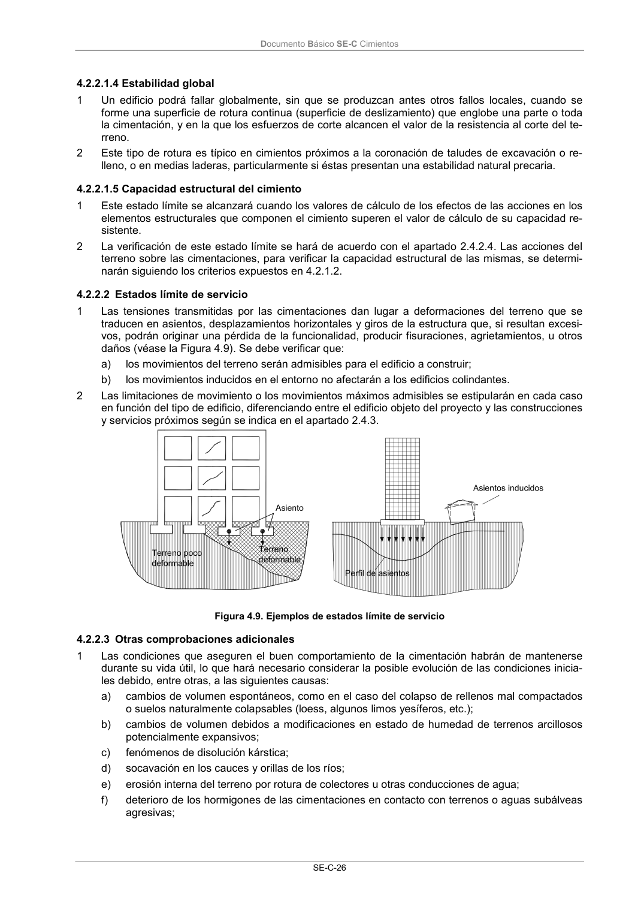

DB-SE-C · 4.2.2.1.3 Vuelco · versión 2019-12-20 · capa oficial
Formatos: JSON compacto · Markdown · PDF fuente
Ámbito del documento · texto del ámbito · documento y tablas
ID técnico a0062 · PDF pág. 30-31 · jerarquía no validada por persona · contrastado con el literal de la página 30 (candidato tipográfico); no validado por persona · padre: a0059
4.2.2.1.3 Vuelco 1 Se podrá producir este modo de rotura en cimentaciones que hayan de soportar cargas horizontales y momentos importantes cuando, siendo pequeño el ancho equivalente de la cimentación (véase apartado 4.3.1.3), el movimiento predominante sea el giro de la cimentación. 2 La verificación frente al vuelco debe realizarse en todos los elementos de cimentación que se ajus- ten a las consideraciones anteriores, tanto en forma aislada como conjunta, del edificio completo o de todo elemento estructuralmente independiente, cuando en el equilibrio intervengan acciones o reacciones procedentes del terreno. 3 En general en el equilibrio no se considerará la colaboración del empuje pasivo, a menos que pue- da garantizarse que el terreno que lo produce estará siempre presente. Documento Básico SE-C Cimientos SE-C-26

PDF fuente redistribuible: copia fiel enlazada en esta página (SHA256 verificado).